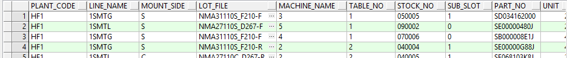

1，
SELECT * FROM CIMR.R_KBN_REEL_SPLICE_T A 借料看板表 
LOT_FILE: NMA31110S_F210-F 说明：
①：NMA311 PCB光板信息,
②：10对应换线管制单上VER.与后面F2组成10F2即 keyparts_revision中版本,存在升级。升级CRB及BOM则升级。
③：S代表S面。
④：F代表table车前后。与TABLE_NO栏位1-F代表前，2-R代表右相同。
STOCK_NO: 050005
①：00 现在只有补位的意义，早期是feeder与小料区别；
②：前面是 机台的名字
③：后面是 feeder 的位置。
与